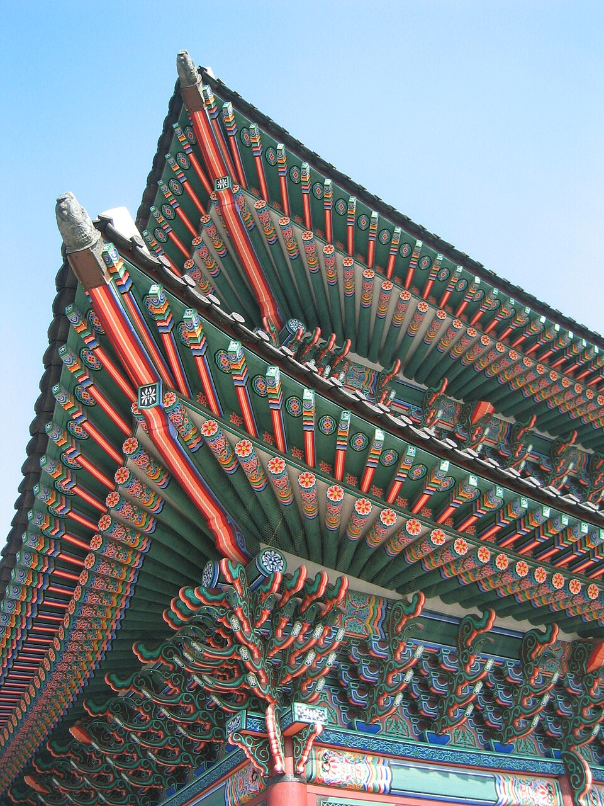

The Global Hallyu Wave

The traditional culture of Korea is the shared cultural and historical heritage of Korea before the division of Korea in 1945.
Since the mid-20th century, Korea has been split between the North Korean and South Korean states, resulting in a number of cultural differences that can be observed even today.
Korean culture is a rich blend of ancient Asian traditions and ultra-modern technology. Rooted deeply in Confucian values, daily life and social customs emphasize respect for elders, strong family bonds, and collective harmony.
Traditional holidays like Seollal (Lunar New Year) and Chuseok (Harvest Festival) bring families together to perform ancestral rites, wear colorful hanbok clothing, and share iconic foods like kimchi and rice-cake soup.
Alongside these historic customs, modern Korea has taken the world by storm through the Hallyu (Korean Wave), sharing K-Pop music, television dramas, and high-tech urban living across the globe.

Beautiful Traditional Korean Culture